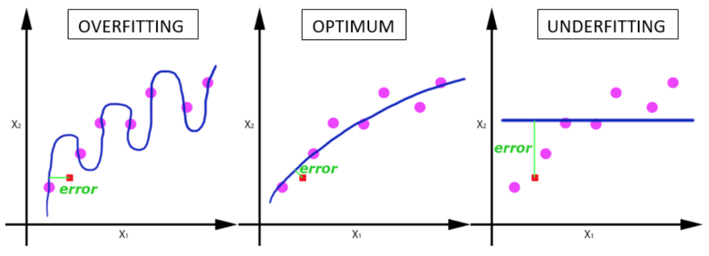

<style>
    .tippy-content {
        font-size: 2em;
    }

    #__0__ .code {
        font-size: 1.5em;
    }

</style>

<div class="title"></div>

<div class="flexcontainer start">
    <div class="code responsive"></div>
</div>

<script>

    (function () {
        _0.useTippy("transparent");
        _0.glowText(".title", ["Das Training beginnt"], "small glow");
        _0.codeJs(".code",
            "type DataPoint = {\n" +
            "   [key: string]: number;\n" +
            "   label: string;\n" +
            "};\n" +
            "\n" +
            "public fitStep = async (trainDataPoints: DataPoint[], \n" +
            "                           epochs: number, \n" +
            "                           batchSize: number, \n" +
            "                           onEpochEnd: (epoch: number, logs: {[key: string]: number})) => {\n" +
            "\n" +
            "   const input: number[][] = transformInput(trainDataPoints);\n" +
            "   const output: number[][] = transformOutput(trainDataPoints);\n" +
            "\n" +
            "   const history = await model.fit(tf.tensor2d(input), tf.tensor2d(output), {\n" +
            "       callbacks: { onEpochEnd }, epochs, batchSize \n" +
            "   });\n" +
            "}\n");

        const steps = [];
        steps.push(_0.highlightLinesStep(".code", "1-4", "In dem Format liegen die Daten vor", "top"));
        steps.push(_0.highlightLinesStep(".code", "6", "Nur mit den Trainingsdaten wird trainiert", "top"));
        steps.push(_0.highlightLinesStep(".code", "7", "Eine Epoche ist eine Runde der Optimierung, in der alle Trainingsdaten einmal durchgegangen werden", "bottom"));
        steps.push(_0.highlightLinesStep(".code", "8", "Wie viele Daten werden gleichzeitig betrachtet. Je größer, desto schneller. Aber Achtung wg. Overfitting", "top"));
        steps.push(_0.highlightLinesStep(".code", "8", "<br><span style='font-size: .5em'>Quelle: https://towardsdatascience.com/epoch-vs-iterations-vs-batch-size-4dfb9c7ce9c9</a>", "bottom"));
        steps.push(_0.highlightLinesStep(".code", "9", "Callback wird nach Ende einer Epoche aufgerufen. Wird hier verwendet, um die UI / Charts zu aktualisieren", "bottom"));
        steps.push(_0.highlightLinesStep(".code", "11-12", "Transformation der Daten in das Tensorflow-Format (Code hier ausgelassen)", "top"));
        steps.push(_0.highlightLinesStep(".code", "14-16", "Let's do it!!!", "bottom"));

        _0.setSteps(steps);

        ___();
    })()
</script>